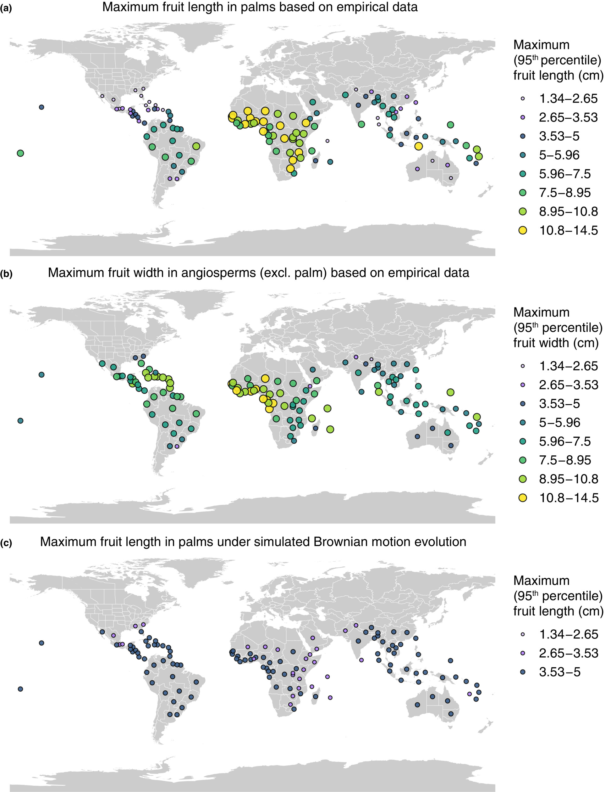
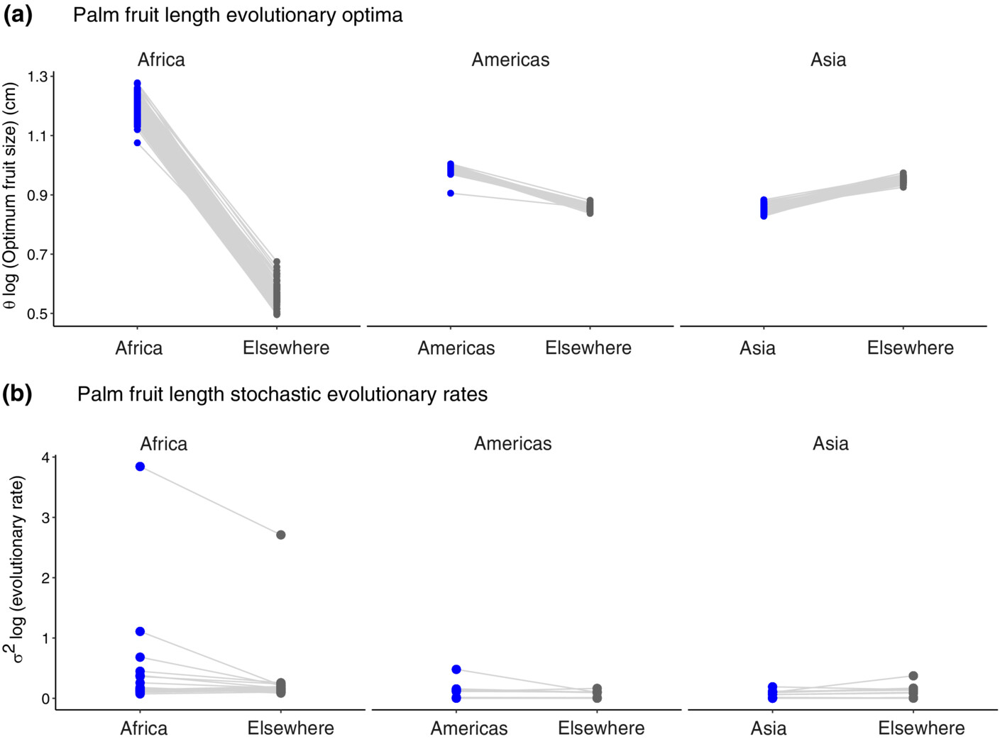

Africa as an evolutionary arena for large fruits
Date: 2023-06-19
Journal: New Phytologist
URL: https://doi.org/10.1111/nph.19061
Citation: ‘Wölke, F.J.R., Cabral, A., Lim, J.Y., Kissling, W.D. and Onstein, R.E. (2023), Africa as an evolutionary arena for large fruits. New Phytol.’
Abstract:
Strong paleoclimatic change and few Late Quaternary megafauna extinctions make mainland Africa unique among continents. Here, we hypothesize that, compared with elsewhere,these conditions created the ecological opportunity for the macroevolution and geographic distribution of large fruits.
We assembled global phylogenetic, distribution and fruit size data for palms (Arecaceae), a pantropical, vertebrate-dispersed family with > 2600 species, and integrated these with data on extinction-driven body size reduction in mammalian frugivore assemblages since the Late Quaternary. We applied evolutionary trait, linear and null models to identify the selective pressures that have shaped fruit sizes.
We show that African palm lineages have evolved towards larger fruit sizes and exhibited faster trait evolutionary rates than lineages elsewhere. Furthermore, the global distribution of the largest palm fruits across species assemblages was explained by occurrence in Africa, especially under low canopies, and extant megafauna, but not by mammalian downsizing. These patterns strongly deviated from expectations under a null model of stochastic (Brownian motion) evolution.
Our results suggest that Africa provided a distinct evolutionary arena for palm fruit size evolution. We argue that megafaunal abundance and the expansion of savanna habitat since the Miocene provided selective advantages for the persistence of African plants with large fruits.
Personal note: This study is based on my master’s thesis (‘Fruit size evolution is shaped by divergent selective regimes related to disperser availability and habitat type in palms (Arecaceae)’). In addition to the publication, the thesis includes evolutionary adaptive analyses concerning open and closed habitat together with megafauna, which makes the suggestions that are made in Wölke et al 2023 regarding adaptive evolution towards larger fruits in african savannas compared to elsewhere more reliable. It also includes several additional (temporal, deep-time) analyses to reconstruct ancestral states and relate those to fruit size changes.

Global distribution of empirical and simulated palm and angiosperm fruit sizes. Only botanical countries with at least three palm species were included. (a) Palm fruit lengths in centimetres; (b) angiosperm (excluding palm) fruit widths; (c) simulated palm fruit lengths under a null model of bounded Brownian motion evolution. This null model scenario would reflect what the distribution of maximum palm fruits across assemblages could have looked like without directional evolution or selection.

Palm fruit length evolution across 100 phylogenetic trees in mainland Africa, the Americas and Asia compared with fruit length evolution elsewhere. (a) Inferred optimum fruit length values (h) under the best Ornstein–Uhlenbeck (OU) models (OUM, OUMV, OUMVA) for empirical palm fruit length evolution. (b) Inferred stochastic evolutionary rates (r2) under the best Ornstein–Uhlenbeck (OU) models (OUMV, OUMVA) for palm fruit length evolution. Each dot-line combination represents the parameter estimates from the best-fitting model for a single phylogenetic tree, and only when the model converged. On one phylogeny, much higher stochastic evolution rates were inferred (outlier in b) with (log) r2 elsewhere = 2.7 and (log) r2 Africa = 3.84.